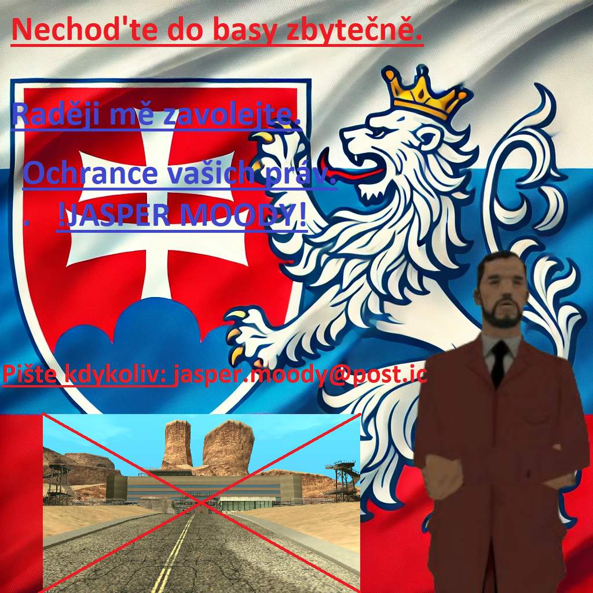
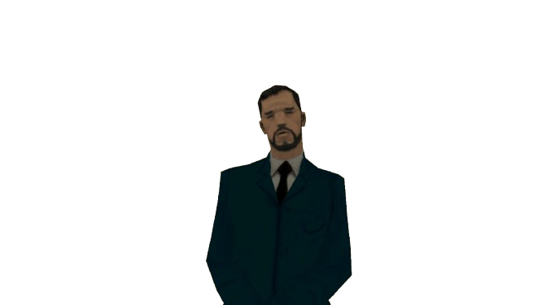
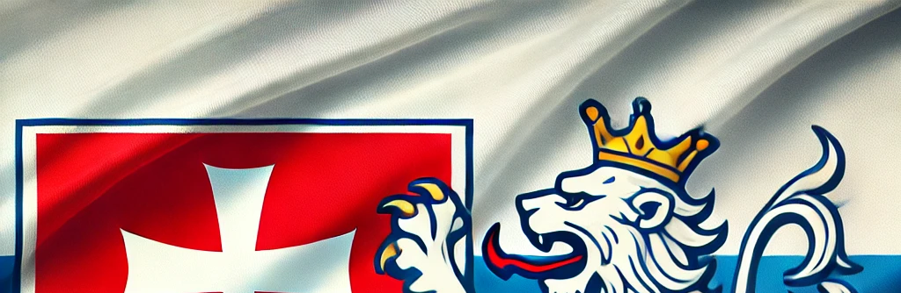
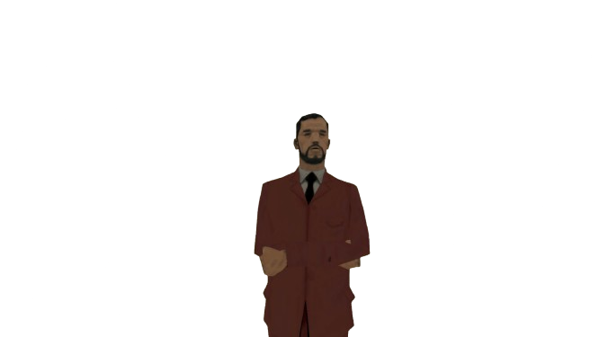
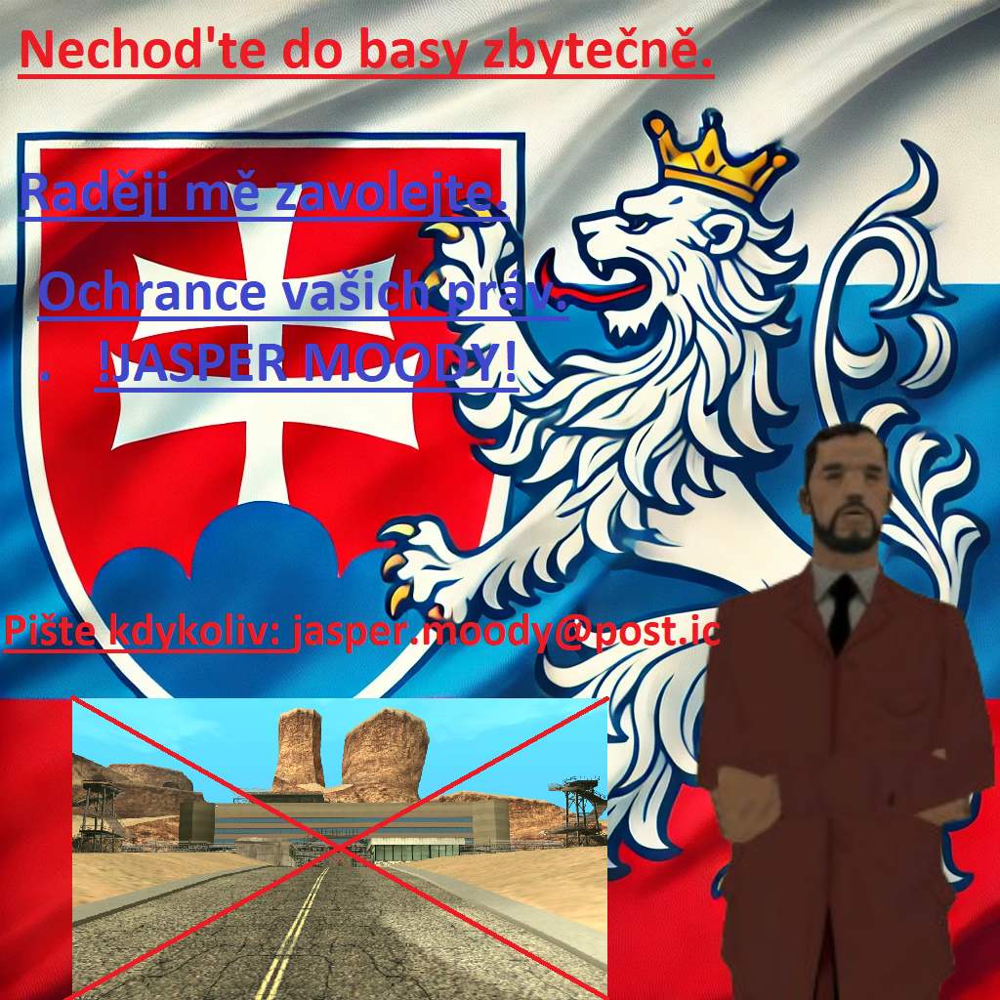
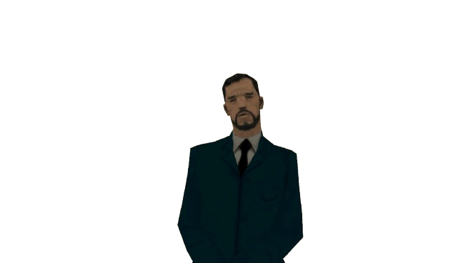
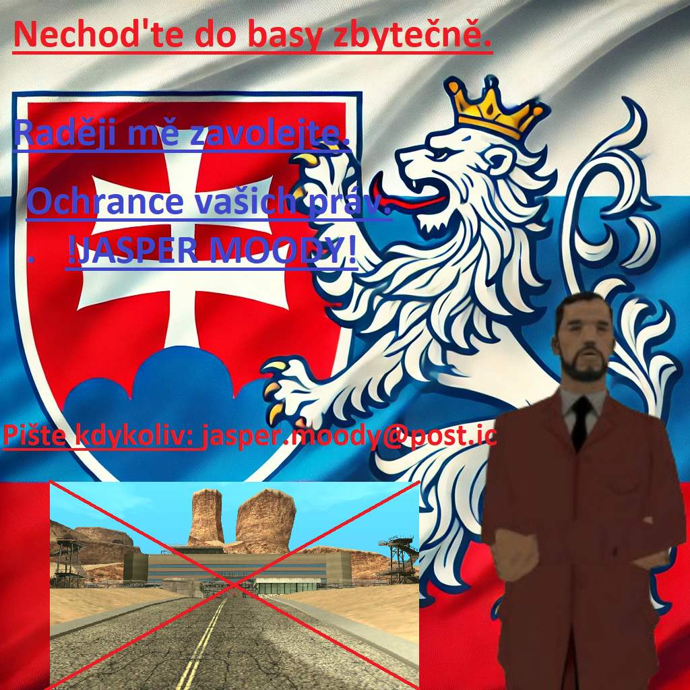
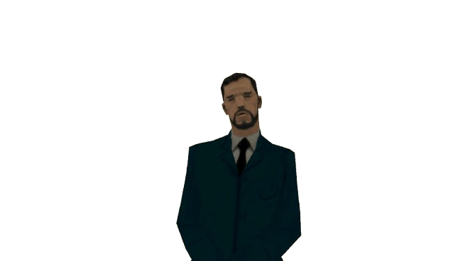

⚖️Jasper Moody⚖️
Nejlepší, nejinteligentnější, nejhezčí,
právník v celém San Andreas
Právník co vás dostane
⚖️Z BASY VEN⚖️
NEPLAT'TE ŠKODY ZA KTERÉ NEMŮŽETE!
NECHOD'TE DO BASY ZBYTENĚ!
Jmenuji se Japser Moody, nejličtější právník,
u kterého jsou na prvním místě klienti,
a až na druhém profesionalita. Udělám vše proto abych vás dostal Z BASY VEN,
jsem ten nejrozumnější nejbystřejší, nejhezčí, nejaktivnější,
a nejprofesionálnější právník v San Andreas. Který je tu pro VÁS.
Peníze, kdo by jich neměl dost. A proto vím že cena je u většiny důležitá.
Proto nemám přesný ceník.
Ale každý případ se liší v tom, jak bude náročný. Cenu můžu navrhnout hned u úvodní schůzi.
A pokud vám nebude vyhovovat, nic neplatíte!
Ale nic co by si normální člověk nemohl dovolit!


ZAUJAL JSEM TĚ?!
⚖️Tak mě kontaktuj okamžitě⚖️
Telefoní čílo: 741-915
Post: jasper.moody@post.ic

 


